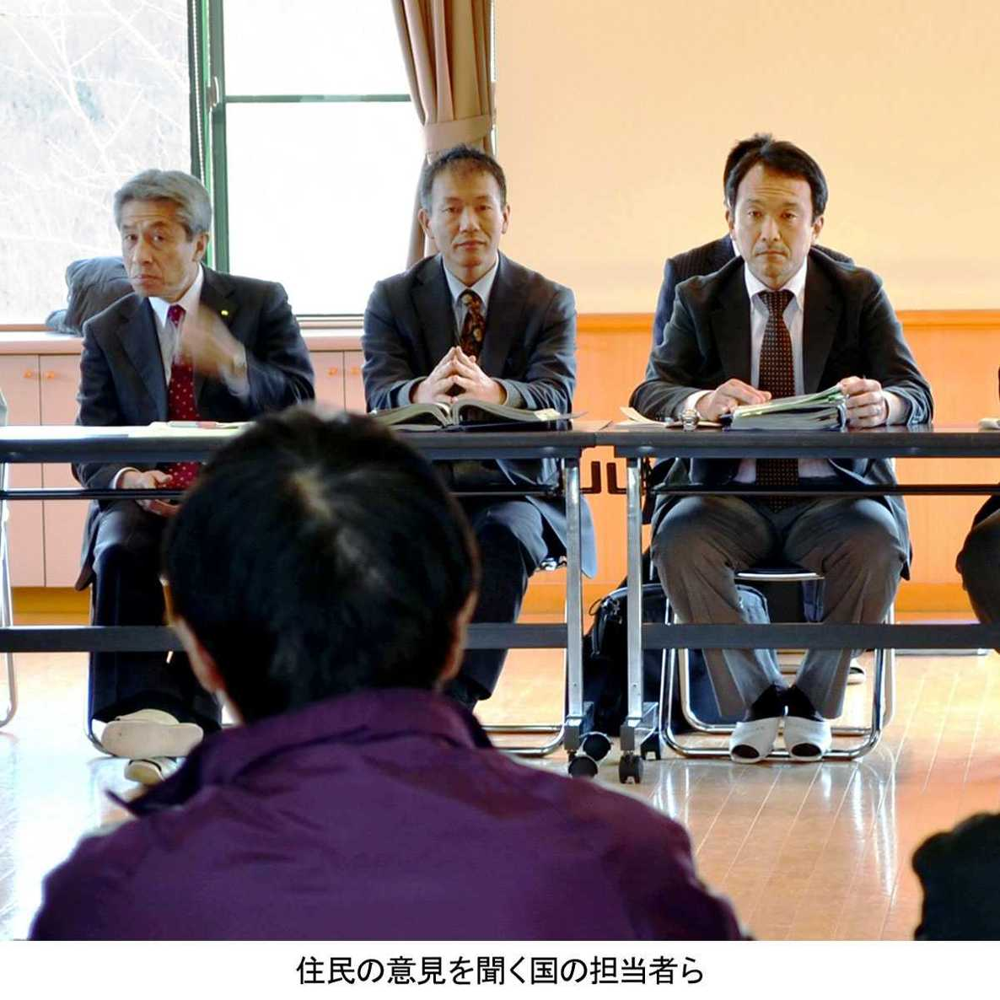

| プロメテウスの罠〔４８〕 帰還の現実「再除染なし。被爆線量が増える」 (朝日新聞デジタルＳＥＬＥＣＴ) | |
| 朝日新聞 | |
| (2014) | |
「子どもを連れて戻るわけにはいかない」「線量計を見ながら生活するなんて」。福島の原発事故で国の避難指示を受けた被災地住民が、除染終了後も放射線量が高い地元に戻るか否かで苦悩している。原発再稼働を支持する安倍政権の「復興加速化」政策では、戻れば賠償金を１人９０万円上乗せし、放射性廃棄物の焼却施設もつくるという。カネで強引に帰還を急がせ、「いのちの問題」は二の次。再除染もない――。地域再生を切願する自治体と避難先に残る不安な住民。国策に引き裂かれた故郷と家族の現実を追う。
内容紹介
「子どもを連れて戻るわけにはいかない」「線量計を見ながら生活するなんて」。福島の原発事故で国の避難指示を受けた被災地住民が、除染終了後も放射線量が高い地元に戻るか否かで苦悩している。原発再稼働を支持する安倍政権の「復興加速化」政策では、戻れば賠償金を１人９０万円上乗せし、放射性廃棄物の焼却施設もつくるという。カネで強引に帰還を急がせ、「いのちの問題」は二の次。再除染もない――。地域再生を切願する自治体と避難先に残る不安な住民。国策に引き裂かれた故郷と家族の現実を追う。
初出
朝日新聞 二〇一四年五月二十五日～六月八日
第１章 別れるしかなかった
第２章 「約束」はどこへ
第３章 子どもが住めるのか
第４章 まるで「管理区域」
第５章 片道２５キロの通学路
第６章 汚染されたままの山
第７章 「真実を見に行こう」
第８章 人形劇が語る苦悩
第９章 井戸水は飲めるのか
第１０章 線量計つきの暮らし
第１１章 「絶対の安全」はない
第１２章 永田町に実情訴えた
第１３章 再除染にゼロ回答
第１４章 不安直視せずに解除
第１５章 過疎化の加速心配
新緑の山々に囲まれた福島県田村市の都路（みやこじ）地区。東京電力福島第一原発の西にある農村地域だ。事故の直後、原発２０キロ圏に住む１２１世帯３８０人は国の指示で避難した。
それから３年。政府は２０１４年４月１日、都路２０キロ圏への避難指示を解除した。曲がりくねった林道の先に家がある坪井幸一（つぼいこういち）（６５）は仮設住宅を離れ、妻（６５）と２人で帰ってきた。
ちょうどひと月たった５月１日、杉の木が茂る家の裏山側に線量計をかざし、記者に示して見せた。
「ほら、まだこんなにある」
毎時０・７３マイクロシーベルトの放射線量。一般人の被曝（ひばく）限度は年間１ミリシーベルトが平常時の基準だ。毎時にすれば０・２３マイクロ。それを上回る地点が、まだあちこちに残っている。
国による地域の除染は１３年６月までに一通りすんだ。仮設住宅に残る息子の秀幸（ひでゆき）（３６）はあきれ顔だ。
「とてもじゃないが、子どもたちを連れて戻るわけにはいかない」
秀幸には１０歳の長女、３歳の次女、１歳になったばかりの三女がいる。線量の高い地点が残っていては安心して子育てできないという。
幸一は息子の言葉にうなずく。
「そのほうがいい。若い夫婦や子どもにとっては体が心配だ」
親子は原発で配電設備の仕事に長く携わってきた。だから、放射線の危険性は身をもって知っている。一家が離ればなれになるのはつらいが、そう決断するしかなかった。
１３年１２月２０日。住民が望むレベルの除染が実現されないまま、安倍内閣は福島の「復興加速化」を掲げて新たな指針を閣議決定した。
早く帰還する住民には１人９０万円の賠償金上乗せを検討する。被曝線量は従来の空間線量による推計から、住民が個人線量計で自ら測る方式に見直す、と伝えられた。
息子の秀幸は首を振る。
「原発作業員でもない一般の住民が、線量計をぶら下げながら生活するなんて......」
結局、カネを積んで住民を早く帰還させ、かたちばかりの復興を急ごうということじゃないのか――。
避難指示の解除準備区域は第一原発周辺の１１市町村に広がっていた。都路地区は解除の第１号になる。
父の幸一は眉をひそめた。
「なし崩しの解除では、あとに続く地域にも響きかねないのだが」
２０１３年１０月１４日。坪井幸一（６５）、秀幸（３６）親子ら田村市都路地区の避難住民３６世帯の仮設住宅がある「福祉の森公園」の集会場で、国と市、住民の意見交換会があった。
福島第一原発の２０キロ圏に入った都路地区の１２１世帯３８０人は事故の直後、国の避難指示で家を離れた。それから２年７カ月がたつ。
国の担当者が「避難指示解除の要件」を配布資料で示した。
（１）年間の積算放射線量が２０ミリシーベルト以下となることが確実
（２）電気、ガス、水道のインフラ復旧など▽子どもの生活環境を中心とする除染作業が十分に進展
（３）自治体、住民との十分な協議
出席した秀幸はあぜんとした。
「２０ミリシーベルト以下だって？ そんなの当たり前じゃないか」
秀幸は原発作業員として、２０代のときから配電設備の仕事にかかわってきた。勤務先の被曝（ひばく）管理は法令の定めより厳しく、被曝限度は年１５ミリだった。一般人は１ミリだ。
「原発での作業よりも高い許容値の中で暮らせというのか」
妻（３８）と幼い娘３人がいる。国の説明で何より引っかかったのは「子どもの生活環境の除染」だ。
国の除染後も、裏山が迫る家の山際周辺には年５ミリシーベルト前後に相当する地点が何カ所もあった。
ほかの宅地でも、そんなレベルの場所があちこちに残っている。地域を取り囲む山林全体の除染は手つかずのままだ。
「こんな状態で、子どもたちを外で自由に遊ばせるなんてできない。子どもの生活環境は学校までの一本道だけじゃないんだから」
国による地域の除染は１２年７月に始まった。目標値は年１ミリシーベルト以下。その「約束」はどこへいったのか――。
しかし国の見解は「１ミリというのはあくまで長期目標。解除の要件ではない」というものだった。
秀幸は思った。
「除染をやっても思うように数値が下がらない。だから、うやむやにするつもりだろう」
国の担当者はいった。
「子どもへの健康影響があるかというと、今の科学的知見では問題ない、ということなんです」
そして続けた。
「避難指示はどこかで解除しないと、前へ進めません」
ここに住み続ける人間の身になっていない――。秀幸は黙っていられず手を挙げた。
田村市都路地区の避難指示解除をめぐり、２０１３年１０月１４日に開かれた国・市と住民の意見交換会。１００人を超す出席者の中から坪井秀幸（３６）が手を挙げ、マイクを握った。
「いきなり解除といわれても、うちら若い世代は不安なんです。まず住民一人ひとりの意見をしっかり聞くべきじゃないですか」
３児がいる秀幸の大声が響く。ほかの住民も次々と疑問をぶつけた。
「除染をしても放射線量は高い。本当に子どもが生活できますか」
「山の除染や住宅地の再除染はどうするのか。このままで解除はのめない」――
会の冒頭で、市長の冨塚宥けい（とみつかゆうけい）（６８）は「後戻りすることは絶対にあってはならない。解除は１１月１日が最も望ましい」といっていた。
住民が帰還の準備をするため、１３年８月から都路地区の福島第一原発２０キロ圏で続けてきた長期宿泊制度が１０月末に期限を迎える。すでに農家の一部などが自宅へ戻り始めていた。その流れで解除しようというのだ。
政府の原子力災害現地対策本部長（経済産業副大臣）の赤羽一嘉（あかばかずよし）（５６）も力を込めた。
「ふるさとへの帰還を実現するべく、環境を整備するのが国の責務。真の復興まで支援を約束します」
国の説明によると、宅地の平均放射線量は除染前、毎時０・６３マイクロシーベルトだった。それが除染後に０・３４マイクロとなり、４６％減ったという。
国が長期目標とする年１ミリシーベルト（毎時０・２３マイクロシーベルト）以下にはなっていない。
しかし国の担当者は強調した。空間線量が高い地点があったとしても、そこに長く居続けなければ被曝（ひばく）線量はそれほど高くならない、と。
住民の多くが納得できない。汚染水漏れなど安定しない原発にも不安が募る。早期解除の方針に反対の声はやまず、質疑応答は３時間近くに及んだ。
そんな中、解除を「来春あたりなら」と提案する住民もいた。市内の移転先で授業を続ける小中学校は、１４年度から都路の元の場所へ戻ろうとしていた。国と市は１３年１１月ではなく、１４年春を目標とする考えを示して会を終えた。
秀幸は怒りが収まらなかった。
「解除ありきで強引に話が進められる。納得できるわけがない」
子どものことを思えば、少しでも放射線の影響がない環境で育てたい。親にとって当たり前の願いだ。それが届かない。
２０１３年１２月１８日。田村市の都路地区から市内船引町の仮設住宅に避難中の坪井幸一（６５）は、福島第一原発２０キロ圏の家に一時帰宅していた。
国は１回除染したが、自宅周辺には裏山側を中心に年５ミリシーベルト相当の地点が何カ所も残る。
「私からすれば、ここは放射線の管理区域みたいなもんだ」
「管理区域」というのは原発の作業員が防護服を着て仕事をするエリアのことだ。年５・２ミリ超で設定され、裏山側はこれに匹敵する。
幸一の本業は農林業だ。息子の秀幸（３６）と田んぼを耕し、シイタケ栽培用の原木も共有林で育ててきた。農閑期に働く場が原発だった。
３年前の震災発生のとき、幸一は第一原発３号機のそばで変圧器の交換作業をしていた。激しく長い揺れ。身の危険を感じ、急いで勤務先の事務所へ逃げ帰った。
しかし爆発事故後は人手が足りず、３月２４日から５日間ほど再び第一原発へ。外部電源にケーブルをつなぐ作業をした。１号機の手前１００メートル地点で、線量計のアラームが何度もけたたましく鳴った。
勤務先が自主的に設定する被曝（ひばく）限度は年１５ミリシーベルト。事故後の現場では、わずかな滞在時間でもそれをたちまち超えた。
でも、それは管理区域周辺での被曝だ。これでメシを食ってきたんだから仕方がない、と思う。
しかし生活圏となれば話は違う。田植えのときも線量計をつけ、防護服を着てやれというのか――。除染も徹底しないまま帰還を促す国の態度に納得がいかない。
息子の秀幸も２０代のころから各地の原発を渡り歩き、父と同じように働いてきた。
事故後、第一原発へ向かう父から「お前はまだ若い。行くな」と止められた。４０代の先輩からも「現場ではかなり放射線を食う。若い者は行かないほうがいい」といわれた。
親子にとって、東京電力は「仕事をくれるお得意さん」だった。しかし今となっては、暮らしを奪った加害者でしかない。
１２年１１月、幸一は原発で働くのをやめた。高齢なのもあるが、原発に嫌気がさしたのが大きい。
「交通事故でいえば、過失割合は東電１０。住民はゼロだ」
畳にカビがはえ、傷んでいた家はほぼ自力で修繕した。そこに妻（６５）と二人きりで暮らす。「人生、せいぜいあと２０年だ」。その後、子や孫が住むあてはない。
田村市都路地区の避難指示が解除された２０１４年４月、地域の小中学校は元の校舎で３年ぶりに授業を再開した。
雨空にツバメが飛ぶ５月１日の夕方。市立古道（ふるみち）小学校から、家路に向かう子どもたちが出てきた。その行列のなかに、坪井秀幸（３６）の長女で４年生の瀬奈（せな）（１０）もいた。
白いスクールバスに十数人の児童が乗る。バスは仮設住宅を回り、最後に瀬奈を送る。小高い丘の上に老人ホームがある市内船引町の「福祉の森公園」が終着点だ。
学校から２５キロの道のり。ほぼ１時間かかる。午後６時前、瀬奈は赤いランドセルを背にバスを降り、公園内の仮設住宅へ一人とぼとぼ歩く。
「あー、やっと着いたあ」
朝は７時発。こんどは最初に瀬奈が乗る。学校再開から２週間目、瀬奈は熱を出して２日間休んだ。帰宅後に宿題をする余裕がなく、帰りのバスを待つ間にこなすことが多い。
「学校は楽しいよ。でも大変」
原発事故翌月の１１年４月、原発３０キロ圏にある古道小は船引町へ移転し、仮の校舎で授業を続けた。住民の多くがそこに避難していた。
１３年秋、秀幸に市教委のアンケート用紙が届いた。新年度から学校は元の校舎に戻る。そのとき通学をどうするかの意向調査だった。
（１）都路へ戻って通う
（２）避難先から通う
（３）転校する
学校が元の場所に戻れば、瀬奈はもっと早起きしなければならない。しかし都路の家は放射線量が気になり、すぐには住めそうにない。
「転校しかない」と思った。
でも瀬奈の気持ちは揺れていた。
「友だちと別れたくない......」
親子で何度か話し合った。１４年１月になって、ようやく決めた。
「今のまま仮設住宅からバスで通う」
秀幸自身、まだ職が定まっていない。大型免許を取るため自動車教習所に通っていたが、移住先も決まらず、しばらくは「仮の暮らし」から抜け出せそうにない。
それは秀幸に限ったことではなかった。
市教委が３月に集計したところ、新年度からも古道小に通うという児童は７５人中６６人いた。しかし都路に戻って通うのは２８人、避難先から通うという児童が３８人にのぼった。
半数以上の子どもが遠い避難先に残る現実。それでも学校は元の場所へ戻る。市はそれを地域再生への悲願としていた。
福島第一原発２０キロ圏の田村市都路地区には「坪井」姓が多い。坪井幸一（６５）親子と同じ集落に、農家５代目の坪井哲蔵（つぼいてつぞう）（６５）がいる。山の中でシイタケを栽培してきた。
かつて地域には、原木シイタケの栽培農家が２０～３０軒あった。担い手の高齢化や市場価格の低迷で、その数はだんだん減っていった。
「おら、その生き残りだ」
２０１３年１２月、避難指示解除に備え、自宅のリフォームをほぼ終えた。真新しい畳の上でこたつに入り、たばこをくゆらす。
「でもな。帰ってきたところで仕事がねえ」
原木の林は１・５ヘクタールほど。原発事故から３年近くたっても、山中の放射線量は毎時１マイクロシーベルト近くある。栽培用の「ほだ木」も１キロあたりの放射性物質が１千ベクレルを超え、使いものにならない。
国の除染は１３年６月、住宅の敷地と宅地から山林側に２０メートル入った範囲で終わった。哲蔵が原木シイタケの露地栽培を復活させるには、山の中が元に戻らないと難しい。
だが国は、山林から放射性物質が宅地側へ流れ込む動きは小さいといった理由から、山全体にまで除染を広げようとはしない。
それでも哲蔵は帰還を決めた。
「この土地を捨てて逃げるわけにいかねえ。ここで先祖代々、ずっと生きてきたわけだから」
１３年春、事故後２年ぶりに一時帰宅したとき、家はネズミに荒らされていた。ふすまがかじられ、布団には赤ん坊４匹が寝転がっていた。
妻（５８）、母（８８）と暮らす福祉の森公園仮設住宅から通い、再建に取りかかった。基礎工事からやり直し、汚染された屋根や外壁もすべて取り換えた。
年金暮らしの身だから、もう住宅ローンは組めない。こつこつためた貯金と東京電力からの賠償金などをあわせ、２千万円以上をリフォームにつぎ込んだ。
除染作業で働く長男（３６）は帰還するというから、離れの修繕もした。第一原発などで働いていた次男（３１）は放射線量が気になるのか、帰ってくるつもりはないという。
「どこも若い世代が帰ってこない。このままじゃ、いずれ集落はなくなるんでねえか」
肉厚の原木シイタケの味と香りが懐かしい。復活の日は来るのだろうか――。哲蔵の仲間は１３年秋、事故から２７年たったチェルノブイリ原発の視察に向かった。
チェルノブイリ原発の事故で森林はどんな影響を受けたのか。
２０１３年９月、福島県の原木シイタケ農家が現地視察に行ったという話は、原木を共有林で育ててきた坪井幸一（６５）の耳にも入っていた。
視察団は福島県原木椎茸（しいたけ）被害者の会（２３人）の生産者ら９人。
その１人、副会長の宗像幹一郎（むなかたかんいちろう）（６３）は田村市南部の山で３５年にわたり栽培を手がけてきた。福島の事故でシイタケ４トン、ほだ木５万本が放射能にやられ、泣く泣く捨てた。
ウクライナにあるチェルノブイリ原発は事故から２７年がたつ。
「自分の目で真実を見に行こう。そっから始めねえと、おらたちの未来も見えねえと思って」
チェルノブイリでは、事故処理が続く原発の近くをバスで走った。線量計はホットスポットで毎時１０マイクロシーベルトを振り切れ、計測不能になった。「やべっ！」。スピードを上げ、逃げるように駆け抜けた。
隣国ベラルーシのゴメリ州にある森林汚染の研究施設を訪ねた。森のキノコはどうなっているのか。
「野生のキノコは、まだ食べられないものもあります」
セシウム１３７は半減期が３０年と長い。しかもキノコは放射性物質を吸い込みやすい。四半世紀以上たっても、森はなかなか元に戻らない。
原木シイタケの場合も、自然の中で育てる栽培法が、汚染された土地では裏目に出てしまう。
それでもゴメリでは、森の中に入り込み、新たな植林をして放射性物質を吸い取る手法を試み、一定の効果を上げていると教わった。
地元のリンゴ農家にも足を運んだ。チェルノブイリから１５０キロ離れている。空間の放射線量を測ってみた。毎時０・０３マイクロシーベルト。田村市よりずっと低い。
しかし農家によると、いまも風評被害はあるという。
「ゴメリから出ていく食べ物は買わないほうがいいと考えるベラルーシ人は多いんです」
視察団は重い現実を突きつけられた。汚染の度合いや地形、地質の違いもあるから、福島と単純に比べることはできないだろう。
それにしても、と宗像は思う。
都路地区の避難指示が解除になったといっても、山が汚染されたままじゃ、原木シイタケ農家らにとっては「帰還困難区域」じゃないか。
「いままで山と一緒に生きてきた人間に、このまま帰ってどうしろってんだ」
このまま避難指示が解除になっても子どもを連れては帰れない。
３児がいる坪井秀幸（３６）が思い悩んでいた２０１３年秋、田村市のシイタケ農家の苦悩をテーマにした人形劇が隣の三春町で上演された。
モデルはチェルノブイリ原発を視察した宗像幹一郎（６３）。１０月２５日夜、市民ら約２０人が見に集まった。
「山のアワビ、つくっぺ！」
人形を操るのは、宗像の近所で野菜を作る大河原多津子（おおかわらたつこ）（５９）。宗像が夫婦で３５年間、原木シイタケを育ててきた喜びで幕を開ける。
それが福島の事故で一変する。多津子の静かな告発が続く。
「山も川も、もう元には戻らない。放射能は簡単に消えない」
「ふるさとをなくした人々、仕事をなくした人々。農民や漁民はプライドをズタズタにされた。今もたくさんの涙が流されている」
多津子も、そんな一人だ。
福島第一原発の西３９キロに家と畑がある。事故の直後、菜っ葉からは１キロあたり３万ベクレルを超える放射性物質が検出された。
夫の伸（しん）（５９）と有機農業を続けて３０年。山の落ち葉で腐葉土を作り、農薬を一切使わず畑を耕してきた。
「やっと理想の土ができた」
そう感じ始めていたとき、長年の苦労が台無しにされた。
「申し訳ないけれど、子どもに食べさせるのはちょっと......」
首都圏をふくめ約５０人いた直売のなじみ客は離れていった。
５人の子を育てた大河原夫妻も、親の気持ちはよくわかる。でも夫妻にとって、手塩にかけて育てた畑もまた「わが子」のようなものだ。捨てるわけにいかなかった。
１３年７月、念願の野菜直売店「えすぺり」を開いた。エスペラント語で「希望する」という意味だ。都路街道に続く三春町のバイパス沿い。ロッジのような店構えが映える。
約３０軒の地元農家から届く野菜が並ぶ。生産者名に加え、セシウムの数値も示す。規制値より大幅に低い１ケタ台だが、消費者に情報を公開して判断してもらおうと考えた。
子育て中の近所の主婦（４０）はありがたがる。「ここで暮らす以上、少しでも安全な食品を選びたくて」
帰還か移住か。事故がなければ迫られる必要のなかった選択は、いくつもの家族の分断をもたらした。
大河原夫妻は、子ども向けの人形劇も店で続ける。どんなときも子どもたちの笑顔だけは絶やしたくない、と願って。
国の除染終了から半年になる２０１３年末。まもなく来る新年は、田村市都路地区の原発２０キロ圏に家がある人たちにとっては、帰還するかどうかの決断を迫られる年だった。
坪井幸一（６５）、秀幸（３６）親子と同じ集落の一人、新田達雄（にったたつお）（６３）は１２月２６日、避難先の福祉の森公園仮設住宅から雪道を縫って、自宅へ車を走らせた。放射線量を確認するためだ。
平屋の家は山を背負って立つ。山肌の下にコンクリート製の井戸がある。線量計を周辺にかざすと、毎時１マイクロシーベルト前後だった。
「こんなに線量が高いままで、どうやって暮らすんだべ」
気になるのは飲み水だ。もともと都路の原発２０キロ圏は、ほぼ全域で上水道が整備されていない。ほとんどの住民が井戸水や沢水で生活してきたからだ。新田はいう。
「阿武隈山系の地下水は軟水でおいしいんだ」
井戸は深さ１０メートルほどもある。しかし時間がたつにつれ、山中の地表に沈着した放射性物質が地中深くに染み込み、水が汚染されやしないか――。そんな不安をぬぐえない。
坪井親子と同じように、新田も原発で電気工事の仕事をしてきた。職場では放射線管理を徹底された。
１０月にあった国・市との意見交換会でも、水の安全性を問うた。
水質検査で放射性物質は「不検出」というが、わずかでも数値は出ていないのか。出ていないのなら検出限界値はいくらなのか――。
１カ月後、復興庁から回答の文書が仮設住宅に届いた。
「不検出のところは、水１リットルあたり１ベクレルよりも小さい数値です」
「検出下限値は１ベクレルを超えることはありません」
飲料水の規制基準値は「１キロあたり１０ベクレル」。だから安全という。
しかし、資料で示された測定値は新田が暮らす集落外のものだった。
新田は納得できない。
「おらんちのデータを示してくれねえと安心できないよ。だって、水は毎日飲むもんだよ。怖いよ。末恐ろしくって、おら帰れねえよ」
その後、飲み水について国から示された最終回答はこうだった。
「仮に基準値を超える放射性物質が検出された場合、東京電力による賠償を受けることが可能です」
新田はいう。
「カネの問題じゃない。いのちの問題なんだ」
個人線量計で被曝（ひばく）線量を測って暮らす。そんな試みが田村市都路地区で始まったのは２０１３年８月だった。住民の帰還に向け、原発２０キロ圏で長期宿泊ができるようになった時期だ。
坪井幸一（６５）親子と同じ集落で農業を営む坪井久夫（つぼいひさお）（６３）は福祉の森公園仮設住宅から自宅へ戻り、稲作をしながら線量を測り始めた。
国から貸与された新型の白い線量計は消しゴムより少し大きめ。１時間ごとの被曝線量が記録され、計測を始めてからの積算線量もわかる。
久夫は午前５時前に寝床を出る。線量計を胸ポケットに入れ、田んぼの様子を見に行ったり、イノシシよけの柵に使う木を切りに山へ入ったり。１日１０時間ほど外で過ごす。
そんな生活だった９月９日の記録を見ると、外出後の朝１０時は毎時０・３マイクロシーベルト。家で昼食をとった正午は０・１５マイクロ、帰宅後の夜８時には０・１マイクロ未満に下がっていた。
１０月４日はほぼ終日、毎時０・１～０・２マイクロ程度だった。この日は、福島県内でも放射線量が低い会津地方の友人宅へ遊びに行った。
だが１１月２０日は午後から毎時０・４～０・５マイクロに上がった。記憶をたどり「そういえば」と思い出した。
近所の家で修繕工事を手伝い、暑くなって脱いだ上着を杉の木の下に置いて忘れてきた。ポケットの線量計が外気に一晩さらされたのだ。
計測から４カ月、１１月２８日までの総被曝線量は０・４４ミリシーベルト。年１・３ミリ程度と推計された。
「どんな行動が被曝線量に影響するのか、わかるようになった」
原発事故を挟み、３年ぶりに作付けをしたコメが秋に実った。出荷用では旧警戒区域で初めてだ。
放射性物質は１キロあたり９ベクレル未満。食品の規制値１００ベクレルを大幅にクリアした。首都圏の顧客にこれらの数値を伝え、買ってもらえた。
線量計を身につける生活なんてやっかいだ、と久夫も思う。でもここで農業を続ける限り、自ら測るしかないと覚悟した。「お客さんとの信頼関係が何より大切だから」
だが地域では「まるで人体実験」と計測を拒む住民が少なくない。
被曝線量は、個人線量計のほうが従来の空間線量による推計値より低く出る傾向にある。国が長期目標とする「年１ミリシーベルト」の達成をたやすくするための策ではないか。そんな不信感も根強い。
１４年５月末までに新型線量計を受け取った住民は６２人。全体の２割弱にとどまる。
２０１３年８月２９日午後２時３３分、福島県南部の鮫川村で爆発が起きた。
放射性廃棄物を焼却する環境省のパイロット施設だ。焼却灰を運び出すコンベヤー内に可燃性ガスが発生し、くすぶる灰が火種となって引火、金属のカバーが破裂した。
１０日前から本格運転を始めたばかり。これと同様の焼却施設を、環境省が田村市都路地区付近に造る計画を進めるさなかの事故だった。
原発２０キロ圏の住民で、建設候補地から北東２キロの自宅に帰還するつもりだった馬上忠護（もうえちゅうご）（７０）は驚いた。
「こりゃ大変だ」
環境省は１３年７月から、都路地区の行政区長や建設候補地の周辺住民に計画の説明を始めていた。
候補地は、田村市都路地区と川内村にまたがる東京電力の設備用地６ヘクタール。両市村の除染で出た草木のほか、県内各地に残る汚染物の稲わらや堆肥（たいひ）などを処理する計画だ。
除染廃棄物を詰めた黒い袋は道端のあちこちに積まれている。このころ、田村市の一部だけでも２０万袋になると見込まれた。量を減らすには焼却するしかない――。それが国の考えだった。
住民からは、批判や不安の声が噴き出す。
「さあ帰ろうかというときに、そんな施設をつくられたら妨げだ」
「放射性物質が大気中に拡散するんじゃないか」
そんなときに起きたのが鮫川の事故だった。消防の調べでは爆発だったが、環境省は「爆発」と明言せず、作業員が手順を間違えて起きた「破損事故」と説明してきた。
住民に不信の空気が広がった。
９月になって、都路の行政区長会が「建設反対」を決議する。
馬上は１０月、住民有志で学習会「放射能ゴミ焼却を考える都路・川内の会」を立ち上げた。専門家を呼んで話を聞き、建設中止を呼びかけるビラを配って回った。
「焼却炉の集じん装置は焼却灰を完全には取り除けません。燃えて気化した放射性物質がすり抜ける可能性だって否定できないんです」
馬上は約２０年前、東京から都路へ単身で移り住んだ。経理事務所の勤め人だったが体調を崩し、自給自足でのんびりできる生活を選んだ。それは原発事故で失われた。
「絶対の安全」なんてないことは原発事故ではっきりしたじゃないか。新たな迷惑施設に悩まされるのはもうごめんだ。「被曝（ひばく）してからじゃ遅いんだよ」
田村市都路地区に放射性廃棄物の焼却施設を造る。この計画に反対する住民の渡辺（わたなべ）ミヨ子（７２）は２０１４年１月２８日、東京・永田町に駆けつけた。
衆院第一議員会館のホールで開かれた「原発事故被害者の救済を求める全国集会」に参加するためだ。ホールを埋めた超党派の国会議員や支援者に実情を訴えた。
「帰還促進のため、除染廃棄物がどんどん増えています。その焼却施設も国は強引に造ろうとしています。私はとても心配です」
渡辺の家は原発３０キロ圏の山あいにある。事故から３年近くたっても、近所のモニタリングポストは毎時０・４マイクロシーベルトを指す。目の前には除染廃棄物の黒い袋が山積みだ。
渡辺は都路村の時代から半世紀以上、農業を営んできた。「ナツハゼ」というブルーベリーのような甘酸っぱい果実の栽培が自慢だった。
「生活は貧しくても、きれいな果実とかわいい孫を健やかに育てたくて、都路に住んでいました」
そんなささやかな願いは一瞬にして壊れてしまった。
事故の直後に一家で逃げ出し、夫（７８）や小学生の孫娘（１１）と市内中心部で避難生活を続けている。もう家には帰らない、と決めた。
ところが、事故で市内中心部へ移転した小学校は４月から都路に戻った。孫娘はそこに通う。焼却施設ができては、孫への影響が不安だ。
事故後、福島第一原発の２０～３０キロ圏には「緊急時避難準備区域」が設定され、渡辺の家もエリアに入った。しかし、事故半年後の１１年９月、政府は指定を解除する。１２年８月、１人月１０万円の慰謝料も打ち切られた。
解除から３年近くになる今も、都路地区を含む田村市のこの区域では住民が約２千人に半減したままだ。帰還が進まない。
いま政府は、被曝（ひばく）線量を年間２０ミリシーベルトまで許容する基準で、２０キロ圏への避難指示解除を進める。
そんな基準で子や孫を守れると住民は思うだろうか。このままで帰還が進むわけがない、と渡辺はいう。
議員会館の集会では、首都圏に暮らす避難者らが次々と声を上げた。
「２０ミリ受忍論を押し返そう。それなしに脱原発もあり得ない」
避難者たちの救済を求め、約２０万人の署名が集まった。それを詰めた段ボール箱を渡辺らはしっかり抱え、国会議員に一つずつ手渡した。
しかし、受け取る側に与党議員の姿はなかった。
２０１４年１月１８日午前１０時、田村市都路地区の避難住民と国・市との会合が、３カ月ぶりに開かれた。
寒い日だった。市の福祉の森公園の集会場には住民約３０人が集まった。報道陣も来ていたが、市の担当者から閉め出された。
坪井幸一（６５）は集落の代表役員だ。立ち上がって呼びかけた。
「みなさん、どうぞ忌憚（きたん）のない意見を出してください」
住民側は１カ月前、帰還にあたって実現を求める１０項目の要望書を国と市に提出していた。
なかでも強く求めたのは、国の除染後も残る放射線量の高い地点についての再除染だった。
どのくらいの放射線量だったら再除染するのか。その場所はどこになるのか。いつから始めるのか――。
それに対し、国は文書でこう回答していた。
「新たに汚染された地点があった場合は、原因把握・効果的な対処方法の調査を行い、対応について国と市でよく相談いたします」
こんな回答では納得できない。この日の集まりでも、意見は再除染に集中した。
幸一の息子、秀幸（３６）も出席していた。秀幸は、幼い子どもがいることを強く訴えた。
「子どもが土遊びをできる環境に戻してほしいんです。それなしに避難指示の解除はあり得ない」
国側は復興庁の担当者ら４人が並び、代わる代わる返答した。
「生活環境を百％元に戻すのは不可能だと思います」
「年１ミリシーベルトにならないと解除できないわけではありません」
「線量の高い地点があるなら、そこは個別に対応をお示ししたい」
「ただし、解除とは関係ない。解除後もやるべきことはやります」
住民から厳しい声が飛んだ。
「解除後にやるといわれても信用できない」
「あなたたちが、家族を連れて住んでみればいい」
場が静まった。
秀幸が質問した。
「このまま帰還したとして、もし健康被害が起きたらどうなるんですか。水俣病みたいに、何十年も争うことになるんですか」
国側は答えた。
賠償の仕組みはある。ただし、原発事故との因果関係が認められればの話――。
２時間２０分。話し合いは平行線のまま終わった。

帰還前に再除染をしてくれるのかくれないのか。
２０１４年２月２３日、田村市都路地区の原発２０キロ圏の住民たちと、国・市側との３度目の意見交換会が開かれた。前回と同じ福祉の森公園の集会場に、約１００人の住民が集まった。
国の側も力が入っていた。経済産業副大臣の赤羽一嘉（５６）が来ている。原子力災害現地対策本部長という肩書だ。経産省から出向している副本部長、熊谷敬（くまがいたかし）（５５）も座っている。十数人が正面に並んだ。
住民が要望した再除染はどうなるのか。国側はきっぱり答えた。
「除染を繰り返しても効果は限定的です。再度、一律に面的な除染はしません」
ただし個別の相談窓口を設け、除染の必要がある土壌があれば対応していくとした。
「ああ、個別の問題にすり替えて、ごまかすつもりなんだな」
３児がいる坪井秀幸（３６）はそう受け止めた。
秀幸はこれまで、避難指示解除の要件である「子どもの生活環境の除染」が不十分なままだ、と繰り返し主張してきている。
秀幸は立ち上がり、子どもの砂遊び場周辺の放射線量が高いことを改めて訴えた。
「解除する前に、子を持つ親の目線から見直してほしいんです」
しかし国側の返答は「個別の相談として対応します。解除前でないとやれない、ということではない」。
経産副大臣の赤羽が補足した。
「雪が解けたら現地へ行かせます。いいようにします」
担当者を視察に行かせ、秀幸の希望に沿えるようにする、という意味だ。議論はそれで打ち切られた。
司会はただちに「解除の時期」に論点を切り替えた。
秀幸とは別の集落の住民代表が手を挙げた。
「もう我々では決められない。国の判断でお願いしたい」
政府にゲタをあずける、という趣旨だ。それを受け、現地対策本部の副本部長、熊谷がマイクを握った。
「帰還したい方がいる。その権利を守る観点から、なるべく早く解除したい。４月１日の解除が適当ではないかと考えます」
赤羽が引き取る。
「条件はクリアした。国としては４月１日に解除させていただく」
ふくらむ除染費用に賠償金。それを打ち切る決着だった。
再除染なし、２０１４年４月１日付で避難指示解除――。
国が住民に告げてから２週間後の１４年３月８日、首相の安倍晋三（あべしんぞう）（５９）が田村市の都路地区を訪れた。市長の冨塚宥けい（とみつかゆうけい）（６８）や行政区長らが握手で出迎えた。
数人の住民らと車座になって懇談した後、安倍は報道陣に語った。
「待ちに待った帰還がスタートする。帰還するみなさんに寄り添いながら、健康面においてもしっかり支援していきたい」
２日後の３月１０日、政府は都路地区の避難指示解除を正式決定した。翌１１日は震災３年の節目だった。
帰りたくても帰れない――。そんな住民の姿は首相訪問の場になかった。３児を抱える坪井秀幸（３６）は集まり自体を知らなかった。
「帰れない人の声を聞かない。ただのパフォーマンスじゃないか」
届かぬ思いはいくつもあった。
父の幸一（６５）をはじめ住民の多くは農林業を営み、山の恵みで生きてきた。春は山菜、秋はキノコを採る楽しみがあった。森は子どもが成長する大切な遊び場でもあった。
その山が汚染されたまま、どうやって暮らしを取り戻すというのか。
だが、国は住民に「営業上の損害は賠償される」というだけだった。
そうじゃない、と秀幸はいう。
「住民は、ただ、元の暮らしを取り戻したいだけなんだ」
国はこれまで、帰還するかどうかは住民一人ひとりの判断だと説明してきた。避難指示を解除したからといって帰還を強制するものではない――。
しかし避難指示が解除されると、１人月１０万円の慰謝料は原則１年で打ち切られる。仮設住宅の入居期限も、いずれ終わりが来るだろう。
秀幸は投げ出された気分だ。
「もしこの先、移住のめどが立たなければ、放射線への不安があっても家へ帰るしかなくなるんじゃないか。そんなふうにすら感じます」
解除から２カ月が過ぎた。
都路地区２０キロ圏の住民登録は５月２３日現在、１１２世帯３５０人。帰還したのは約２割の３４世帯８１人だ。
若い世代は帰還をためらう。帰るのは、人生の残り時間を思う高齢層が中心だ。
政府は「復興加速化」というが、加速するのは過疎化じゃないか。秀幸はそう思う。
プロメテウスの罠〔４８〕 帰還の現実「再除染なし。被爆線量が増える」
著 者 朝日新聞（田井良洋）
発行所 朝日新聞社
〒１０４―８０１１ 東京都中央区築地５―３―２
http://www.asahi.com/
発売所 朝日新聞社デジタル本部
〒１０４―８０１１ 東京都中央区築地５―３―２
http://www.asahi.com
２０１４年６月２０日 ＷＥＢ新書版発行
２０１４年７月３１日 ＥＰＵＢ版発行
©2014 The Asahi Shimbun Company
All rights reserved. No reproduction or republication without written permission.
ISBN 978-4-86526-344-2
〈ご注意〉本コンテンツは、購入者個人の閲覧目的のためのものです。私的範囲を越える利用・譲渡などは禁止します。
〈おことわり〉本コンテンツは２０１４年６月２０日に刊行されたＷＥＢ新書版を底本としました。ＥＰＵＢ版の刊行にともない、体裁や表記を直した場合があります。 企業、組織などの名称、人物の役職、肩書等はいずれも記事初出当時のものです。